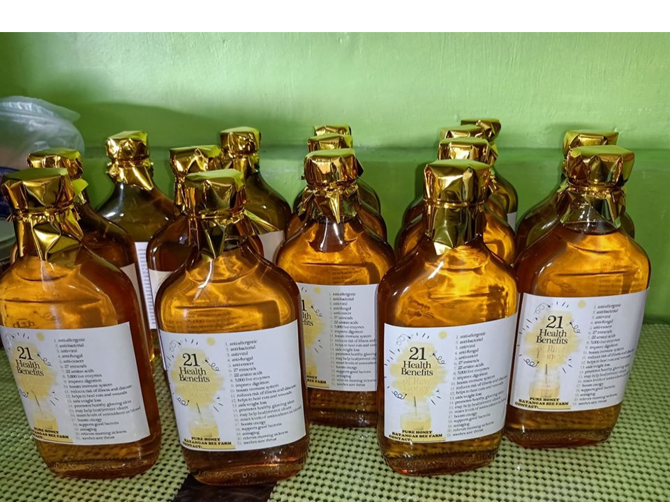
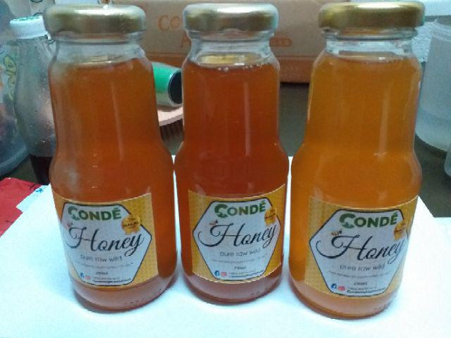

Raw Honey

The nectar is mixed with enzymes and stored in honeycomb cells.
Pure Honey

It is made by collecting nectar from flowers, which is then brought
back to the bee hive and processed by the bees
Homemade Honey

a sweet, amber-colored liquid made by bees using nectar from
flowers.